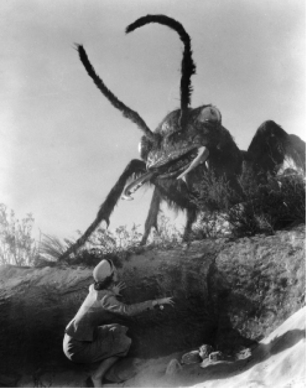

虽然韦尔斯对以文学形式表现核战争起到了形成性的作用，但是这个主题在冷战期间才成为迫切需要探讨的问题，然后又在20世纪50年代至80年代才成为众多小说的表现对象。韦尔斯的《解放的世界》（1914，美国版书名为《最后一战》）暗示了镭与乌托邦希望之间的关联，尤其是与人类进入后民族时代、战争被终结的希望之间的关联。讽刺的是，小说出版之年正是第一次世界大战爆发之时。1945年，原子弹轰炸广岛和长崎的事件突然间把韦尔斯的小说场景变成了近在眼前的现实，“末日时钟”成了这一现实的象征。自1947年起，《原子能科学家公报》每一期的封面上都是这一意象，时钟设定在差几分钟就到午夜的那一刻。一夜之间，诸多的小说家都在为未来的浩劫以分钟作倒计时，时间变得弥足珍贵。当弹道导弹替代了喷气式轰炸机，预警时间也极大地缩短了，珍妮特·莫里斯和克里斯·莫里斯1984年的小说《四十分钟的战争》（异乎寻常地由伊斯兰圣战分子所发动）把主要情节压缩到了不到一个小时的时间跨度中。在一些乌托邦小说，如苏西·麦基·恰尔纳斯的《走向世界末日》（1974）中，核战争作为常规社会解体的一个方便的解释而存在于背景故事中。
绝大多数核战争小说都以苏联为反角，通过身处战争中的美国人的视角，以情绪化的语词描写战争。在核战争中，民族的存亡和个人的生死成了首要问题。在大量的小说中，美国都被描写成已为苏联所占领，如西里尔·M.科恩布卢特的《不是这个八月》（1955，英国版名为《圣诞夜》），或者奥利弗·朗格的《范登堡》（1971）。菲利普·怀利的《明日！》（1954）有点不同寻常，它描述了对美国中西部两个城市的实际轰炸，而这两个城市的居民一直在争论民防措施的价值。怀利描写了令人震撼的伤亡场面——婴儿被纷飞的碎玻璃开膛破肚，一个男人在脚被炸掉后用胫骨行走——他想用这种振聋发聩的方式让读者明白防御措施的必要性。但是到了1963年，当他的第二本核战争小说《胜利》出版的时候，他对于民防的信心看起来已经破灭了。在小说中，彻底毁灭的大劫难是不可避免的。
朱迪斯·梅里尔的《壁炉上的阴影》（1950）同样产生于核恐怖情绪开始弥漫的阶段，小说描写了纽约的一名家庭主妇想方设法地利用各种适当的可行措施去应对核打击。帕特·弗兰克的核战争小说《唉，巴比伦》（1959）自面世以来，就一直没有停版。小说的情节和梅里尔小说中的自救情节属于同一类别。不过，这部小说采用了比较远的视角，从佛罗里达州中部的一座小镇观察核战争，其情节关注的是如何在抢劫等犯罪行为日益猖獗的情况下维持公共秩序。弗兰克对核打击的这种洁本式描写包含着很多缺陷，当小说逐渐接近尾声，这些缺陷就凸显了出来，尤其是这个矛盾：任何小镇都不可能脱离城市中心而取得食品、医药和电力供应，但是这些城市中心都已经被摧毁了。所以，不等小说情节发展到最后一页，小镇就面临着彻底崩溃的结局，这是不可避免的，但小说却回避了这个事实。
弗兰克准现实主义的写法同内维尔·舒特的《海滨》（1957）轻描淡写式的叙事相似，后者与1959年的电影改编是对核战争时期的最有争议的描写。内维尔·舒特最初计划写一个求生故事，但是当他对放射性沉降物的扩散有了更多的了解后，他改变了情节，转而写了一个无人生还的故事。小说中，第三次世界大战之后的放射性沉降物无情地飘到了南半球，尤其是澳大利亚。小说的情节分成了两部分，一部分描写墨尔本地区的人万般艰难地接受了他们的命运，以服下毒药自杀作为结局；另外一部分则描写一艘核潜艇开往了美国等地区，去寻找幸存者。出乎舒特所料，这本小说很畅销。斯坦利·克雷默对该小说的改编打破了50年代以耸动的方式表现恐怖的核威胁的套路。当时的《原子怪兽》（1953）刻画了一头在核爆炸之后从北极圈的冰层中出现的生物，而《它们！》（1954）则展示了因附近核试验场的辐射而长成庞然大物的蚂蚁。
相比之下，克雷默的电影并没有这么多的戏剧性，他只是表现了人物的日常活动慢慢地走向停止，并有意避免可能会削弱电影冲击力的任何存有希望的迹象。因为这种立意直接同艾森豪威尔政府的民防政策相抵触，所以电影因它的失败主义而遭到了批判。这部电影的科学假设可能有问题，但它依然是以最谨严的态度反思核战争后果的作品之一。

图15 戈登·道格拉斯《它们！》的剧照（1954）
核战争小说必须处理一个反复出现的关于表达的问题，即如何描写无法形容的事物。很少有小说刻画一场实实在在的核打击，一般情况下核战争小说倾向于描写核战的后果，而这又发生在遥远的未来的某个时刻。所有作家都同意这样的战争会给社会带来巨大破坏，有些小说把核战争后的景象描写为倒退到前工业时代的世界，一个被摧毁的世界。在阿道斯·赫胥黎的《猿和本质》（1948）和金·斯坦利·罗宾逊的《荒蛮海岸》（1984）等作品中，角色们在毁灭后的世界中翻捡残余的有用物品。在阿尔弗雷德·科佩尔的《黑暗的十一月》（1960）、惠特利·斯特里伯和詹姆斯·库纳特卡合著的以新闻报道形式出现的《战争日》（1984）等故事中，大地已经破碎，被割裂为遭到污染的小块居住地，而且有待主人公们去发现。这部生存小说中对自明原因的一般性强调同詹姆斯·莫罗的《这就是世界终结的方式》（1985）形成了强烈对比，在后者中，主人公受到了一场审判，审判他的是死于核战争的人，是他把他们的命运交到了“疯帽匠”的手上。这是刘易斯·卡罗尔笔下的角色与确保同归于尽的核威慑战略的异文合成，具有荒诞色彩。詹姆斯·莫罗计划把这本书写成对战争受害者的提前悼念。
有两本公认的经典核战争小说值得特别提一下，一本是小沃尔特·M.米勒的《莱博维茨的赞歌》（1959），它以三段式结构将核战争描写成西方理性科学探索迷狂到达顶点的结果。小说把犹太–基督教的历史移植到了美国的土地上，并让历史从20世纪50年代开始重演。一场发生在过去的核战争——火焰暴雨是整个故事的序幕，这场核战争消灭了文明，并让无数的人成为畸形人。之后米勒在叙事中重述了西方的文化史，印刷术再次被发明，科学复兴，直至现代民族国家的形成。小说的高潮伴随着终极的重复，核战争在超级大国之间再次爆发。米勒把西方历史描述为已有脚本的循环，它注定了要重复自己。罗素·霍本在《行者里德利》中同样将他的文本当作羊皮故纸上的重写本，这是后核时代的《坎特伯雷故事集》。名为里德利的叙事者绕着弯子去了坎特伯雷，而不是径直过去的。霍本笔下召唤出了新铁器时代的文化，而里德利则要完成他名字所代表的使命 [15] ，当他在大地上四处走动时，需要破解一个个谜语。他的语言，也就是小说文本的语言，是一种变形的英语，包含着双重的含义，以下面这段文字为例，它就像是亚当的故事和原子裂变这两件事情的异文合并：
这里的双关描述的是原子在物理的强力作用下分裂了，接着发生了连锁反应，向外辐射出能量，令人想起从高空鸟瞰的核爆图景。